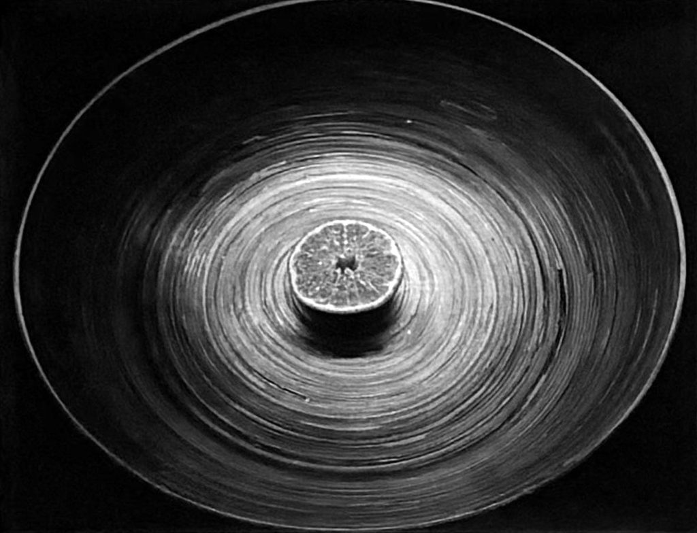
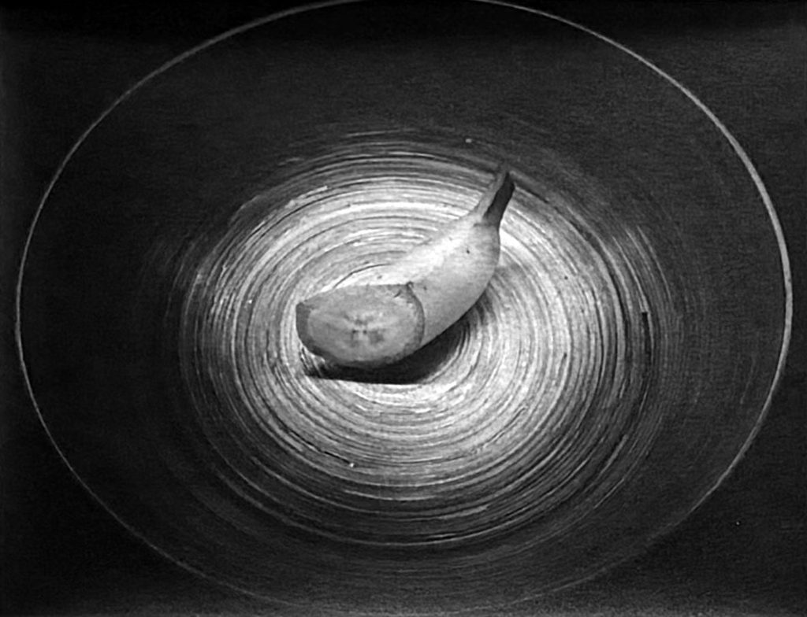
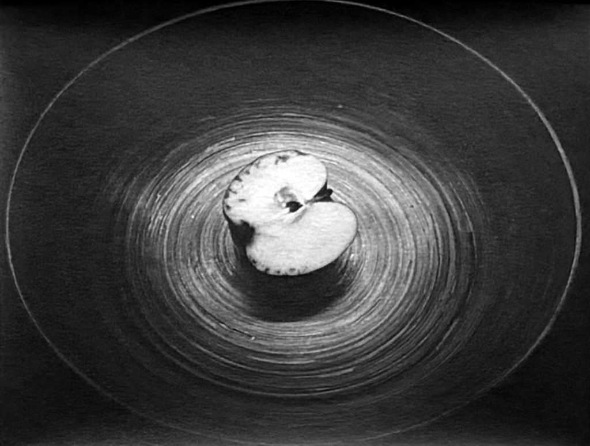
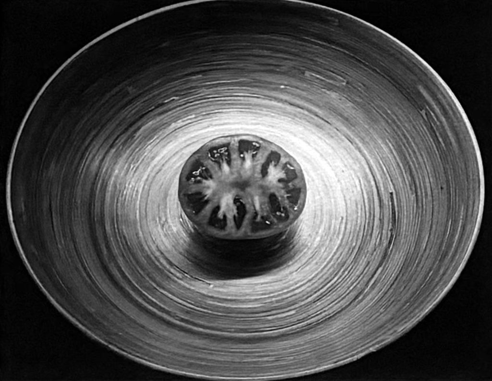
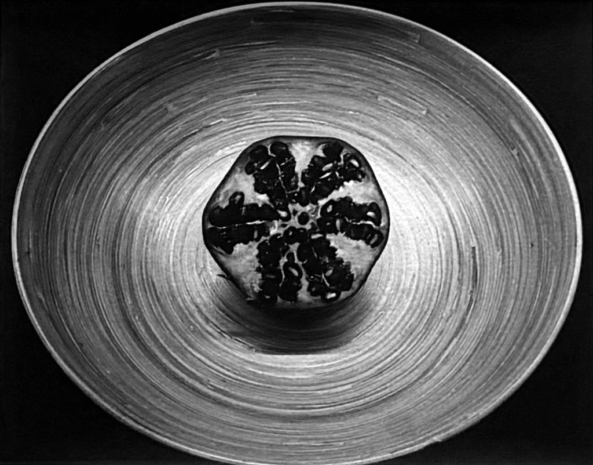
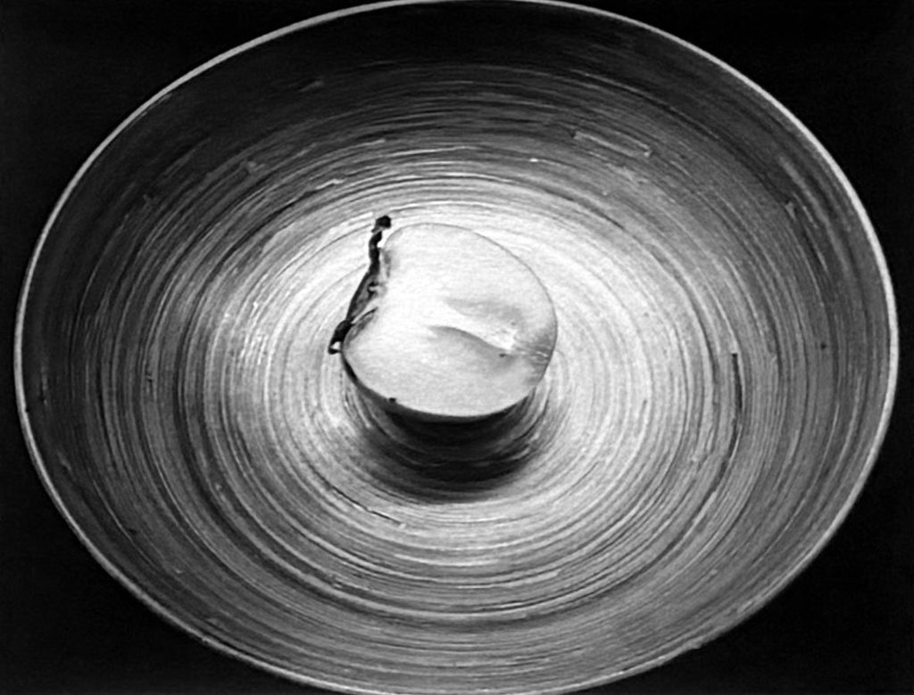
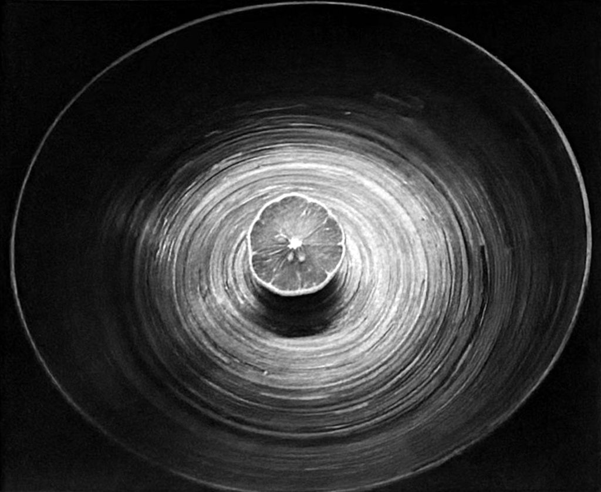
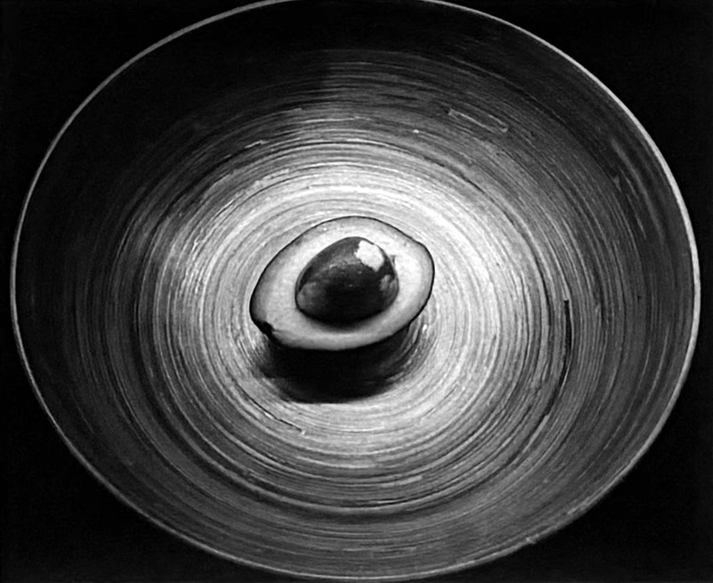
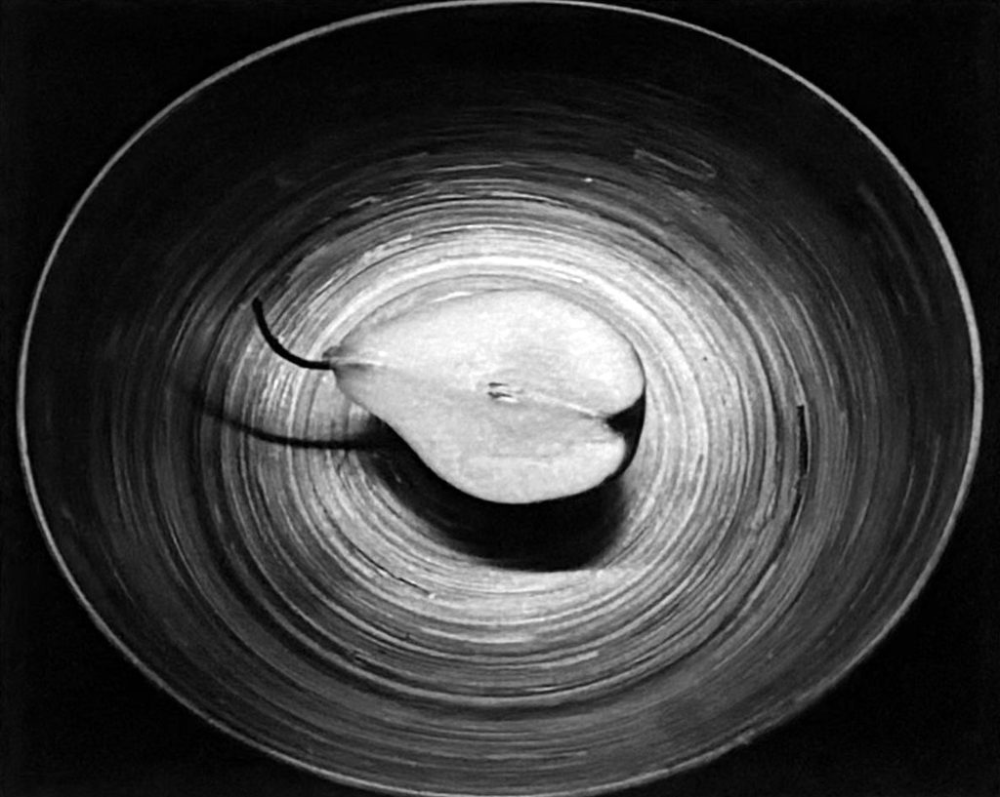
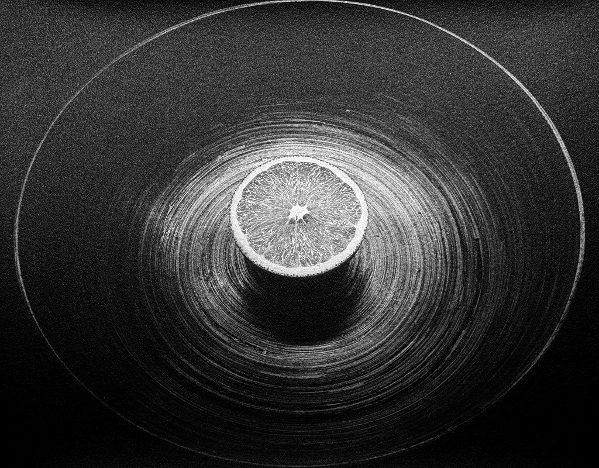

Half Fruit
Volodymyr Demkiv · 3D gallery room
Half Fruit is a series of still lifes of halved fruit on a spun plate, made in Kraków in 2022 and 2023, shot on film and printed by hand as silver gelatin prints. The first room hangs the nine prints as a grid, as shown at photoMIAMI 2026 during Miami Art Week. The second room hangs all ten prints large, in a gallery high above Biscayne Bay.
Each print is made by hand by the artist in the darkroom, on fiber-based paper, signed and numbered in an edition of 5 + 1 AP. Prints are available; please inquire.
Works in this room

Tangerine · Gelatin silver print, made by hand by the artist · Edition of 5 + 1 AP · Sizes up to 48 × 60 in 
Banana · Gelatin silver print, made by hand by the artist · Edition of 5 + 1 AP · Sizes up to 48 × 60 in 
Apple · Gelatin silver print, made by hand by the artist · Edition of 5 + 1 AP · Sizes up to 48 × 60 in 
Tomato · Gelatin silver print, made by hand by the artist · Edition of 5 + 1 AP · Sizes up to 48 × 60 in 
Pomegranate · Gelatin silver print, made by hand by the artist · Edition of 5 + 1 AP · Sizes up to 48 × 60 in 
Persimmon · Gelatin silver print, made by hand by the artist · Edition of 5 + 1 AP · Sizes up to 48 × 60 in 
Lemon · Gelatin silver print, made by hand by the artist · Edition of 5 + 1 AP · Sizes up to 48 × 60 in 
Avocado · Gelatin silver print, made by hand by the artist · Edition of 5 + 1 AP · Sizes up to 48 × 60 in 
Pear · Gelatin silver print, made by hand by the artist · Edition of 5 + 1 AP · Sizes up to 48 × 60 in 
Orange · Gelatin silver print, made by hand by the artist · Edition of 5 + 1 AP · Sizes up to 48 × 60 in